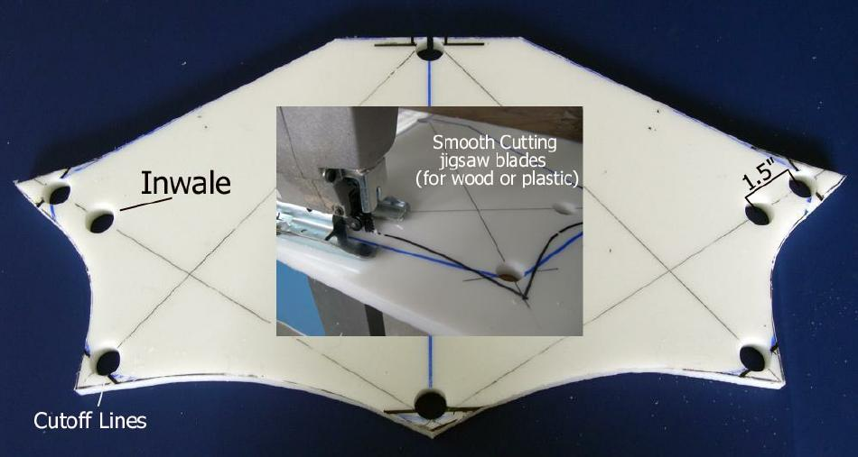

| Cross Sections | Menu Previous Page Next Page |
|  | |
|
Cutting Out Cross Sections - Use a jig saw and smooth cutting wood blades. HDPE is easy to cut and standard wood blades will last quite a while. Cut along the concave lines created using the flexible cable and permanent marker. The original deckridge lines are used except at the gunwales where the line flare out . The extra HDPE next to the each stringer holes, strengthens the stringer to cross section connections. Next, the hole cutoff area will be removed.
The hole for the inwale has been drilled in this photo. It is located 1.5" center to center from the gunwale. It is centered on the line between the gunwale and keel. |
|